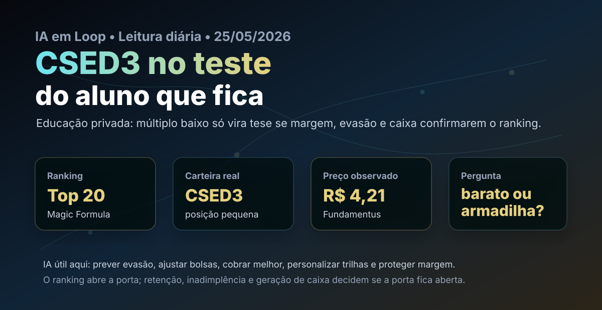

25/05: CSED3, educação e IA no teste do aluno que fica
Depois de uma sequência por seguros, construção, saúde, autopeças, tecnologia, logística, identificação digital, locação de equipamentos e embalagens, a leitura volta para educação — mas por uma porta diferente. CSED3 está no Top 20 da Magic Formula e aparece também na carteira real do método. A pergunta é simples: o preço já compensa o risco de um trimestre fraco?

Em educação privada, a tese não depende só de matricular mais alunos: depende de manter o aluno, cobrar bem, controlar bolsas e converter escala em caixa.
Resposta curta: barato no papel, exigente na execução
CSED3 é um caso de valor operacional em teste. O ranking enxerga retorno sobre capital e preço baixo; a carteira real tem uma posição pequena; a cotação atual está abaixo do preço médio registrado na página da carteira. Mas educação é um setor em que múltiplo baixo pode refletir tanto oportunidade quanto dúvida legítima sobre captação, evasão, inadimplência, ticket, margem e alavancagem.
O que significa “valor operacional em teste”? É quando os indicadores de preço parecem atraentes, mas a tese só se confirma se a operação mostrar melhoria concreta: mais retenção, menos inadimplência, margem preservada e geração de caixa. Sem isso, a ação pode continuar barata por boas razões.
Por que CSED3 hoje?
No arquivo de maio da Magic Formula do IA em Loop, CSED3 aparece dentro do Top 20, no setor Educação, com ROIC de 14,82%, earnings yield de 20,28% e score combinado que a mantém na faixa operacional do método. A página pública da carteira real de Magic Formula registra 9 ações de CSED3, preço médio de R$ 6,33 e valor comprado de R$ 56,97, além de dividendo futuro registrado para 30/06/2026.
A consulta ao Fundamentus feita hoje mostrava cotação de R$ 4,21, P/L de 5,64, P/VP de 0,93, PSR de 0,54, P/EBIT de 2,85, ROIC de 14,3%, ROE de 16,5% e patrimônio líquido de R$ 1,65 bilhão. A notícia pública mais recente encontrada para CSED3 destacava reação negativa a um trimestre fraco, o que combina com a leitura: preço baixo chama atenção, mas não substitui prova operacional.
O trimestre fraco muda a tese?
Muda o tom, não necessariamente a tese. A queda da ação após resultado fraco indica que o mercado está cobrando evidências: qualidade da captação, retenção de alunos, controle de bolsas, inadimplência, margem Ebitda, integração de polos, eficiência digital e conversão de lucro em caixa. Em educação, crescimento sem rentabilidade pode destruir valor; rentabilidade sem retenção também não se sustenta.
A resposta da IA em Loop é: CSED3 continua estudável, mas precisa provar que o desconto não é armadilha de margem. A posição real é pequena, o que combina com o estágio da tese. O ranking abre a porta; a execução acadêmica, comercial e financeira decide se a porta fica aberta.
| Sinal | Leitura prática | O que monitorar |
|---|---|---|
| Top 20 Magic Formula | Preço e retorno sobre capital colocam CSED3 no radar | Se ROIC e lucro permanecem após ajustes do ciclo |
| Preço abaixo do PM da carteira | Aumenta a margem de segurança aparente | Se a queda reflete ruído ou piora estrutural |
| Trimestre fraco | Reduz confiança de curto prazo | Captação, evasão, ticket, bolsas e inadimplência |
| Dividendo futuro registrado | Mostra algum retorno ao acionista | Compatibilidade entre dividendos, caixa e investimento |
Onde a IA pode ser vantagem real
Educação é um dos setores em que IA pode sair do discurso e entrar diretamente no resultado. Não basta usar IA para gerar conteúdo. A vantagem aparece quando a companhia prevê evasão antes de ela acontecer, personaliza trilhas de estudo, identifica disciplinas com maior risco de reprovação, melhora cobrança, calibra bolsas, reduz atendimento repetitivo, aumenta produtividade comercial e usa dados para proteger ticket e margem.
O lado bom
Setor com demanda recorrente por qualificação, ativo dentro do Top 20 da Magic Formula, múltiplos baixos, ROIC razoável e presença pequena na carteira real do método.
O lado perigoso
Resultado recente pressionado, competição intensa, sensibilidade a renda do aluno, risco de evasão, inadimplência, desconto excessivo e dificuldade de transformar escala em caixa.
Compra, venda ou espera?
Para carteira nova: CSED3 parece mais adequada para estudo disciplinado ou entrada muito parcelada do que para compra agressiva. O preço chama atenção, mas a educação privada brasileira exige paciência: uma tese boa precisa sobreviver a ciclos de captação, renegociação de mensalidades, concorrência digital e pressão de renda.
Para quem já tem: o ponto não é vender automaticamente porque houve trimestre fraco. O ponto é acompanhar se a empresa consegue preservar margem, reduzir evasão, controlar inadimplência e gerar caixa. Se esses sinais melhorarem, o desconto pode virar oportunidade. Se piorarem, o múltiplo baixo pode ser apenas o mercado antecipando um lucro menos sustentável.
Gatilhos para melhorar a leitura: captação líquida saudável, evasão menor, ticket médio estável, inadimplência controlada, margem Ebitda resiliente, caixa operacional positivo e dívida administrável. Gatilhos para piorar: nova queda de margem, descontos crescentes para manter aluno, piora de recebíveis, alavancagem maior ou crescimento que não aparece no caixa.
Leitura IA em Loop
CSED3 é um bom lembrete de que ranking não é piloto automático. A Magic Formula aponta empresas com retorno e preço interessantes; a análise precisa perguntar se o retorno é repetível. No caso de Cruzeiro do Sul Educacional, a resposta ainda é condicional: existe desconto, existe presença na carteira real e existe potencial de IA aplicada à operação, mas o trimestre fraco pede prova. A tese melhora quando a companhia mostrar que consegue manter o aluno, cobrar melhor e transformar base acadêmica em caixa recorrente.